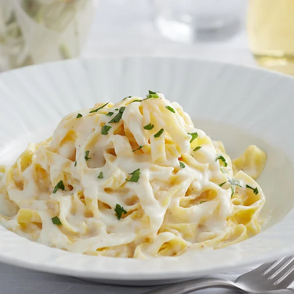

Alfredo

YUMMY!
Ingredients
- 1 pound Fettucine pasta
- kosher salt
- 6 tablespoons butter
- 1 ½ cups Heavy Cream
- 2 tablespoons italian parsley optional
- 1 garlic cloves minced
- 1 ¼ cup Shredded Parmesan Cheese
- ¼ teaspoon Pepper
Instructions
- In a large pot, heat water over high heat until boiling.
Add salt to season the water. Once it is boiling, add
fettuccine and cook according to package instructions.
- In a large skillet or pan, heat butter over medium heat.
Add minced garlic and cook for 1 to 2 minutes. Stir in heavy cream.
- Let heavy cream reduce and cook for 5 to 8 minutes.
Add half of the parmesan cheese to the mixture and whisk well
until smooth. Keep over heat and whisk well until cheese is melted.
- Save some pasta water. The pasta water is full of flavor and can be used to thin out the sauce.
- Toss alfredo sauce with fettuccine pasta and add half of the parmesan cheese.
Once it is tossed, garnish with the remaining parmesan cheese. Add a little pasta water if it needs to be thinned out.
- Garnish with Italian parsley, if so desired.
Hope you enjoy!